1부
설치법
내려받아서 처음 소리가 나올 때까지 따라 합니다.
설치 1
소리는 이렇게 지나갑니다
Fidenne은 음악 앱이 내는 소리를 다듬어 내 DAC로 보냅니다. 소리는 재생 앱 → Fidenne → DAC 순서로 지나갑니다.
- 음악은 Apple Music · Spotify · YouTube Music 앱(또는 브라우저)에서 평소처럼 고르고 틉니다.
- Fidenne은 그 사이에서 소리를 받아 처리해 DAC로 넘깁니다.
- 소리를 저장하거나 파일로 만들지는 않습니다.
설치 2
준비물
Apple 실리콘 Mac(M1 이후 칩), macOS 26 이상, 그리고 유선 USB 외장 DAC가 필요합니다.
- 메뉴 막대의 Apple 로고 › 이 Mac에 관하여 를 엽니다. 칩 이름이 “Apple M” 으로 시작하면 됩니다.
- macOS가 26 보다 낮으면 시스템 설정에서 소프트웨어 업데이트를 먼저 합니다.
- 외장 DAC를 USB로 꽂습니다. 소리를 다듬는 기능(EQ 같은 것)은 352.8 kHz 이상을 받는 2채널 외장 DAC에서만 돕니다.
내장 스피커나 AirPods는 소리를 그대로 듣는 PCM Direct로만 나오므로 이 베타의 대상이 아닙니다.
설치 3
내려받기
설치 파일(.dmg)은 Fidenne 공개 페이지의 릴리스 항목에서 받습니다.
최종 검수 중입니다 — 내려받기는 검수가 끝나면 이 자리에 열립니다.
- 릴리스 페이지(
github.com/fidenne/fidenne/releases)에서 가장 위 최신 항목을 엽니다. .dmg로 끝나는 파일을 누릅니다. 받은 파일은 보통 다운로드 폴더에 들어갑니다.
앱은 서명과 공증을 거쳐 배포됩니다. 다른 곳에서 받은 파일은 쓰지 않습니다.
설치 4
응용 프로그램 폴더로 옮기기
받은 디스크 이미지를 열어 앱을 응용 프로그램 폴더에 둡니다.
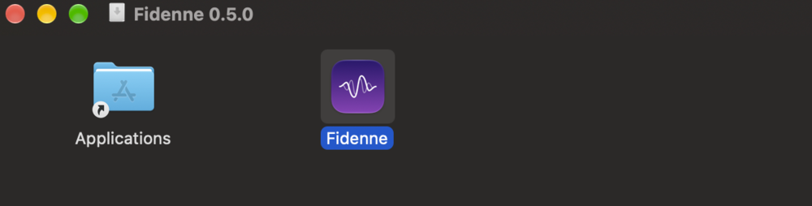
- 받은
.dmg를 두 번 누릅니다. 작은 창이 열립니다. - 창 안의 Fidenne 아이콘을 응용 프로그램 폴더 쪽으로 끌어다 놓습니다.
- 복사가 끝나면 창을 닫고, Finder 사이드바의 꺼내기(⏏) 단추로 디스크 이미지를 닫습니다.
같은 이름의 앱이 이미 있다는 창이 뜨면 새것으로 바꾸는 쪽을 고릅니다.
설치 5
처음 열기
응용 프로그램 폴더에서 Fidenne을 엽니다.
- 인터넷에서 받은 앱이라 macOS가 한 번 묻습니다. 열기 를 누릅니다.
- 그래도 열리지 않으면 시스템 설정 › 개인정보 보호 및 보안 에서 Fidenne을 허용합니다.
이 창의 정확한 문구는 macOS 판마다 조금 다를 수 있습니다.
설치 6
처음 설정
처음 열면 “Fidenne 처음 설정” 창이 뜹니다. 단계마다 뒤로 · 다음 으로 오갑니다.
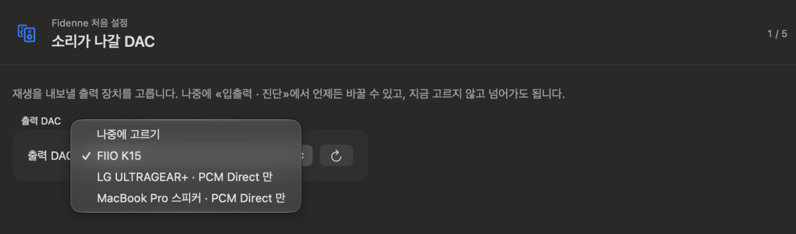
- 소리가 나갈 DAC — 내 DAC를 고릅니다. 모르겠으면 나중에 고르기 로 둡니다. DAC가 안 보이면 꽂은 뒤 새로고침합니다.
- 소리를 가져오는 방법 — 처음부터 Fidenne Inlet 이 골라져 있습니다. 그대로 둡니다. 설치가 안 되어 있으면 설치… 를 누르고 관리자 암호를 한 번 넣습니다(그 순간 잠깐 모든 소리가 끊깁니다).
- macOS가 물어볼 것들 — 지금은 묻지 않고, 그 기능을 처음 쓸 때 묻습니다.
- 이용 약관 · 인터넷 연결 · 진단 기록 — [필수] 이용 약관 을 눌러야 시작 을 누를 수 있습니다. 선택 칸은 꺼진 채로 두어도 재생은 됩니다.
마치면 같은 창에 사이드바와 페이지가 나타납니다. 다음 실행부터는 이 창이 다시 뜨지 않고, 고른 것은 나중에 설정에서 바꿀 수 있습니다.
설치 7
권한
권한은 그 기능을 처음 쓰는 순간 macOS가 묻습니다. 묻는 창이 뜨면 허용 을 누릅니다.
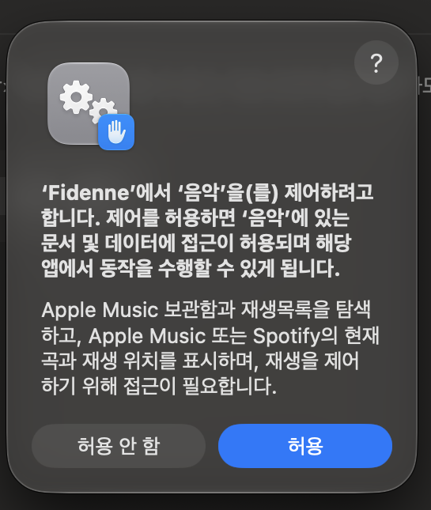
- 오디오 녹음 · 시스템 오디오 — 다른 앱이 내는 소리를 받을 때. 소리를 저장하지 않습니다.
- 마이크 — Fidenne Inlet 같은 입력 장치로 받을 때. 저장하거나 밖으로 보내지 않습니다.
- 자동화 — Apple Music · Spotify의 지금 곡 정보를 읽고 재생 · 일시정지를 전할 때.
실수로 거절했다면 시스템 설정 › 개인정보 보호 및 보안 에서 해당 항목의 Fidenne을 다시 켭니다.
설치 8
첫 재생 전에 음량 낮추기
처음 재생을 누르면 소리가 나기 전에 이 창이 뜹니다.
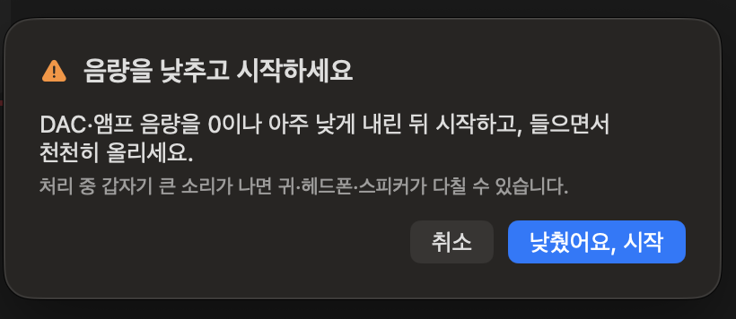
- DAC나 앰프의 음량을 0이나 아주 낮게 내립니다.
- 낮췄어요, 시작 을 누릅니다. 취소 를 누르면 아무것도 시작하지 않습니다.
- 소리를 들으면서 천천히 올립니다.
앱을 켤 때마다 처음 재생에서 한 번, 이 앱으로 처음 쓰는 DAC에서도 한 번 뜹니다. 재생을 눌렀는데 아무 일도 없다면 이 창이 다른 창 뒤에 있는지 봅니다.
설치 9
막혔을 때
소리가 안 나거나 이상하면 증상부터 확인하고, 그래도 안 되면 지원 파일을 만듭니다.
- 앱의 진단 메뉴 › 지원용 진단 내보내기… 로 지원 파일을 만듭니다. 보내기 전에 무엇이 들었는지 화면에 보여 줍니다.
- fidenne.support@gmail.com 으로 메일을 보냅니다. 앱은 아무것도 대신 보내지 않습니다.
진단 파일은 꼭 메일로만 보냅니다. GitHub 이슈에는 올리지 않습니다.
설치 10 · 선택
Spotify 연결 ① 내 앱 만들기
하지 않아도 됩니다. Fidenne 안에서 Spotify 검색 · 재생목록 · 재생 조종을 쓰고 싶을 때만, 내 Spotify 개발자 앱의 키를 만듭니다. 평소 쓰는 Spotify 계정으로 로그인하면 됩니다.
- 브라우저에서
developer.spotify.com을 열고 Log in 을 누릅니다. Fidenne 음악 페이지의 Spotify 옆 점 › 개발자 대시보드 열기 로도 열 수 있습니다.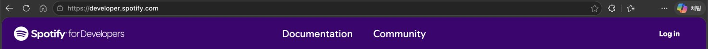
- 로그인한 뒤 계정 이름 단추를 눌러 메뉴에서 Dashboard 를 고릅니다.
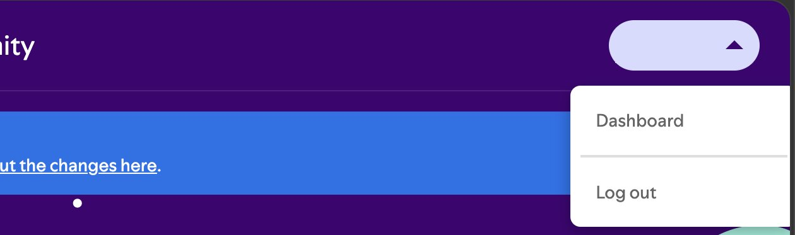
- Dashboard 화면에서 Create app 을 누릅니다.
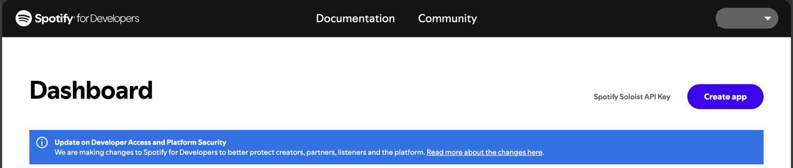
- App name 과 App description 은 아무거나 적습니다. Redirect URIs 칸에는 Fidenne에 보이는 주소
http://127.0.0.1:53682/callback을 붙여 넣고(Fidenne의 복사 단추) Add 를 누릅니다. Which API/SDKs are you planning to use? 에서 Web API 를 체크합니다. Website 칸은 비워 둡니다.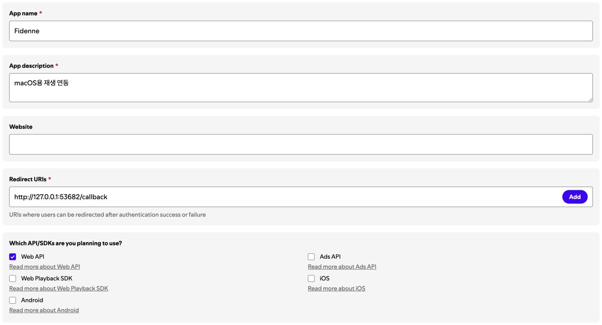
- 약관 동의 칸(I understand and agree with Spotify's Developer Terms of Service and Design Guidelines)을 체크하고 Save 를 누릅니다.
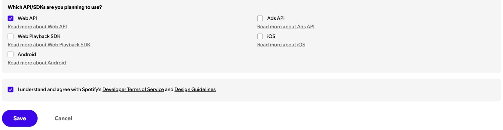
여기서 동의하는 것은 Spotify가 정한 개발자 약관이고, 사용자가 직접 동의합니다. 사이트의 단추 이름과 배치는 바뀔 수 있습니다.
설치 11 · 선택
Spotify 연결 ② 키 넣기
만든 앱의 Client ID 를 Fidenne의 칸에 붙여 넣습니다. Client Secret 은 넣지 않습니다.
- Save 하면 만든 앱의 Basic Information 화면이 열립니다. Client ID 칸 끝의 복사 단추를 누릅니다.
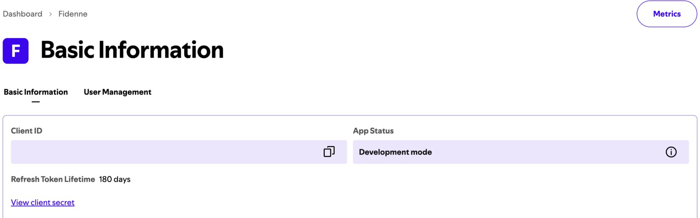
- Fidenne 음악 페이지의 Spotify 연결 칸에 붙여 넣고 키 확인 을 눌러 형식이 맞는지 봅니다. 글자 수를 지적하면 앞뒤 공백이 섞였는지 봅니다. 맞으면 Spotify 연결 을 누릅니다.
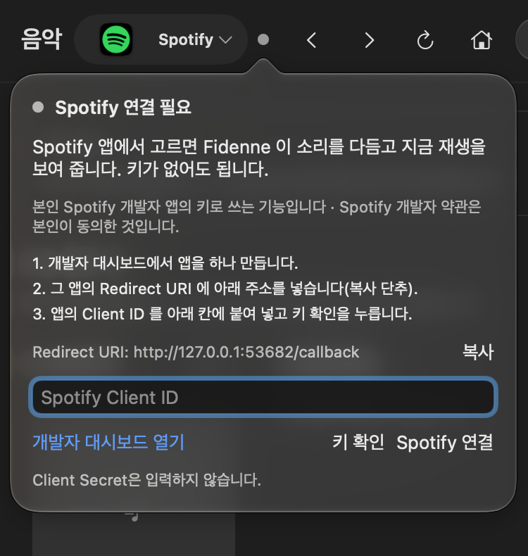
- 브라우저에 Spotify 동의 화면이 뜹니다. 만든 앱 이름을 확인하고 동의 를 누릅니다.
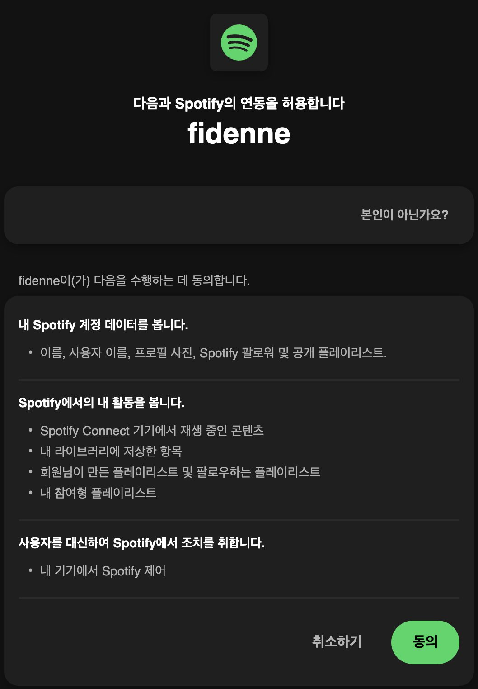
- “Spotify 인증 응답을 받았습니다. Fidenne으로 돌아가 연결 결과를 확인해 주세요.” 가 뜨면 연결이 끝난 것입니다. 이 탭은 닫고 Fidenne으로 돌아옵니다.
재생 · 일시정지 · 넘기기 조종은 Spotify Premium이 있어야 합니다. 연결한 뒤에는 설정에 재생 권한 갱신과 연결 해제가 생깁니다.
설치 12 · 선택
YouTube Music
실험 기능이라 처음에는 꺼져 있습니다. Chrome 이나 Edge 에서 듣고, Fidenne은 브라우저 확장으로 곡 정보를 받고 재생을 조작합니다.
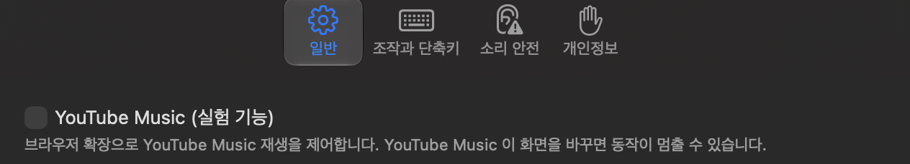
- 설정 › 일반 맨 위 스위치로 YouTube Music을 켭니다.
- 설정 › 개인정보 › Chrome · Edge 확장과 연결 을 켭니다.
- 같은 곳의 설치 안내… 를 누르면 확장 설치 창이 뜹니다. 이 창은 열어 둔 채 다음 단계를 따릅니다.
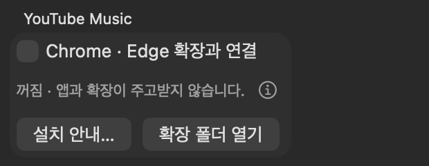

Chrome 에 확장 설치
- Chrome 주소창에
chrome://extensions를 넣고 Return 을 누릅니다(설치 창의 주소 복사). 개발자 모드 스위치를 켜면 단추 셋이 나타납니다.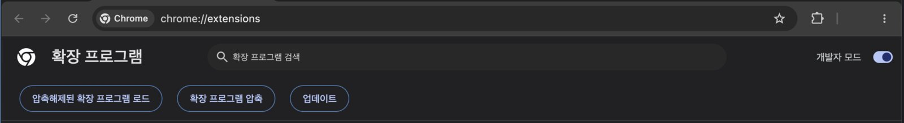
- 압축해제된 확장 프로그램 로드 를 누릅니다. 폴더를 고르는 창이 열립니다.
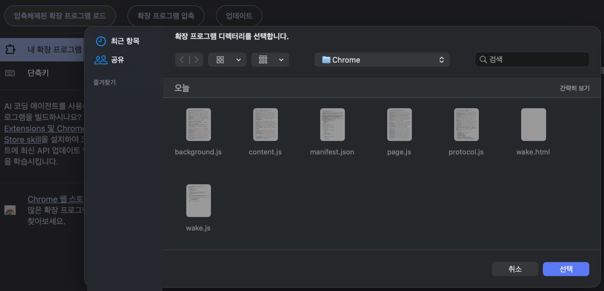
- 그 창에서 ⌘⇧G 를 누르고, 설치 창의 경로 복사 로 복사한 경로를 붙여 넣은 뒤 Return 을 누릅니다.
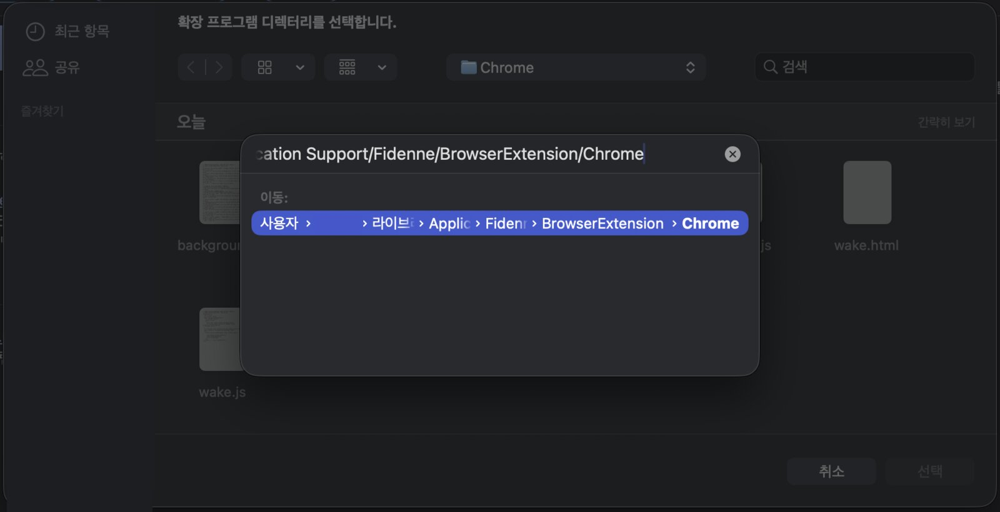
- 폴더 이름이 Chrome 으로 바뀐 것을 보고 선택 을 누릅니다.
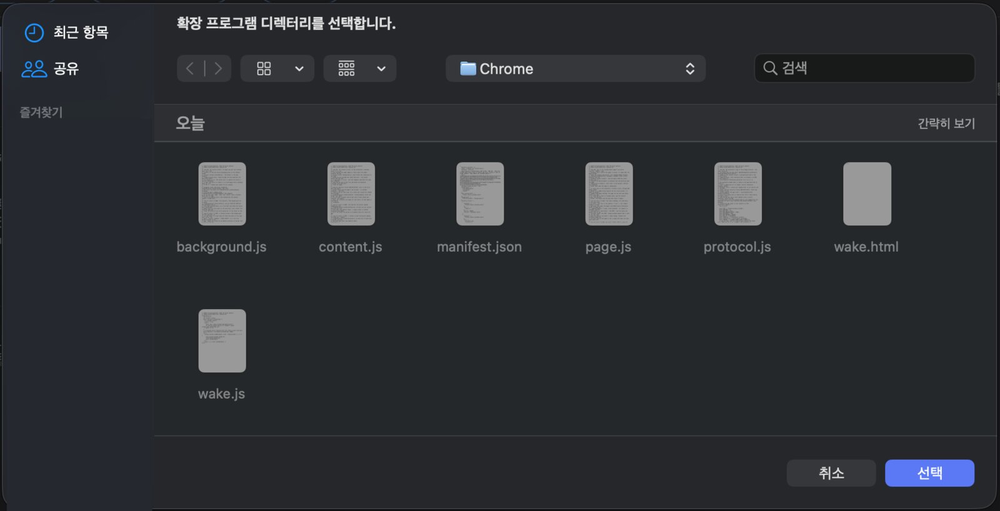
- 확장 목록에 Fidenne for YouTube Music 이 보이면 설치가 끝난 것입니다. 버전 숫자는 다를 수 있습니다.
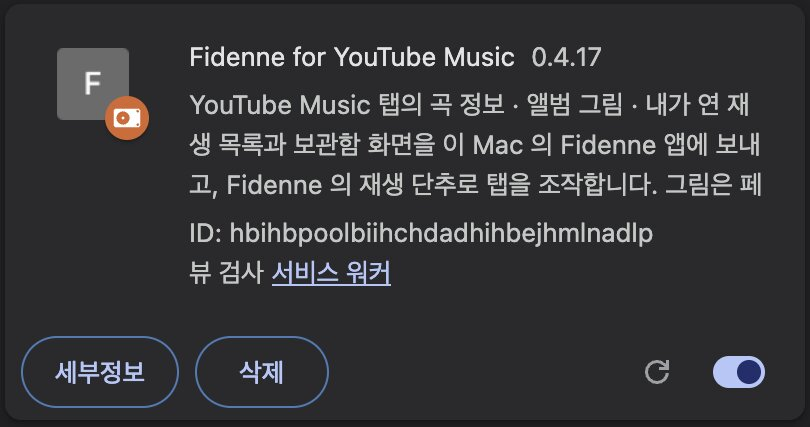
- 열려 있는 YouTube Music 탭을 새로 고칩니다(⌘R).
Edge 에 확장 설치
순서는 Chrome 과 같고 이름만 다릅니다.
- Edge 주소창에
edge://extensions를 넣고 Return 을 누릅니다.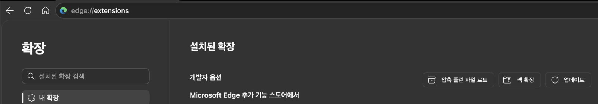
- 사이드바 맨 끝의 개발자 모드 스위치를 켭니다.
- 압축 풀린 파일 로드 를 누르고, 열린 창에서 ⌘⇧G 로 경로 복사 한 경로를 붙여 넣은 뒤 Return, 그다음 선택 을 누릅니다.
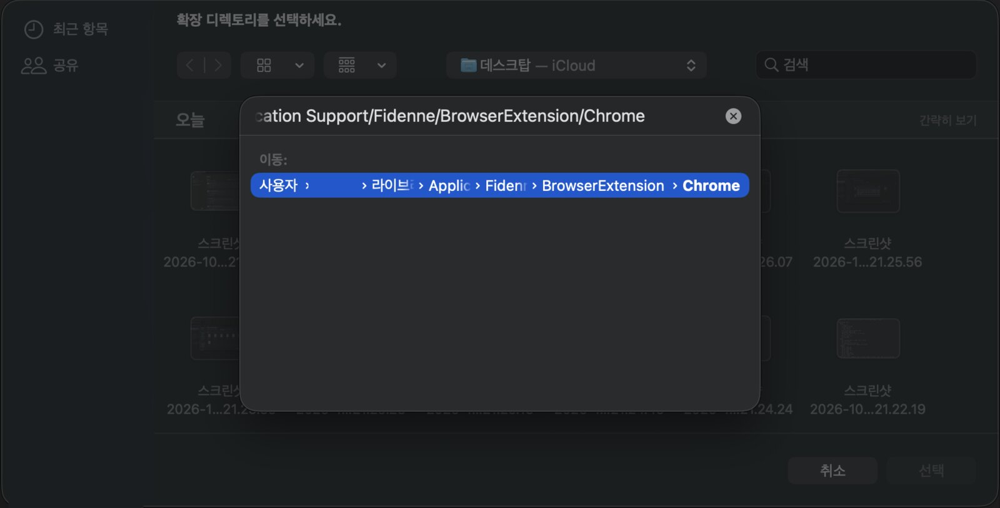
- 기타 출처 아래에 Fidenne for YouTube Music 이 보이면 끝입니다. 열려 있는 YouTube Music 탭을 새로 고칩니다(⌘R).
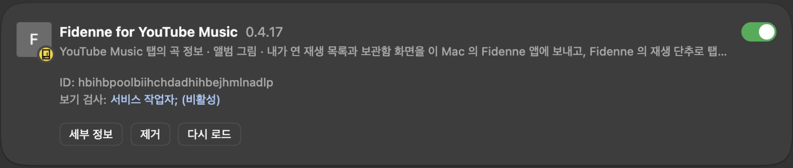
탭이 잠들지 않게
브라우저가 쓰지 않는 탭을 재우면 YouTube Music 이 응답하지 못합니다. music.youtube.com 을 예외에 더합니다. Chrome 은 설정 › 성능 › 메모리 절약 › 항상 활성 상태를 유지할 사이트, Edge 는 설정 › 시스템 및 성능 › 리소스 절약 › 이 사이트를 절전 모드로 전환하지 않음 에 있습니다.
설치 창 맨 아래 줄이 “브라우저 1개 연결됨” 으로 바뀌면 연결된 것입니다. 확장은 한 브라우저에만 설치하고, Safari 는 지원하지 않습니다. 앱을 업데이트한 뒤에는 확장 페이지에서 Fidenne 확장의 새로 고침(↻, Edge 는 다시 로드)을 한 번 누릅니다.
2부
사용법
장치 고르기 → 서비스 연결하기 → 재생하기 순서로 사용법을 안내합니다.
사용 1
소리가 나갈 DAC 고르기
사이드바의 입출력 · 진단(⌘5)에서 출력 DAC와 출력 방식을 고릅니다.
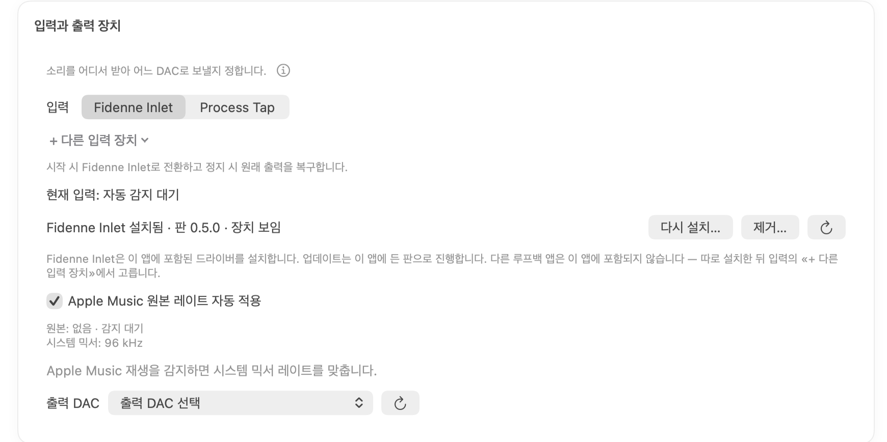
- 출력 DAC 에서 내 DAC를 고릅니다. 안 보이면 꽂은 뒤 새로고침(↻)을 누릅니다.
- 출력 방식 에서 셋 중 하나를 고릅니다.
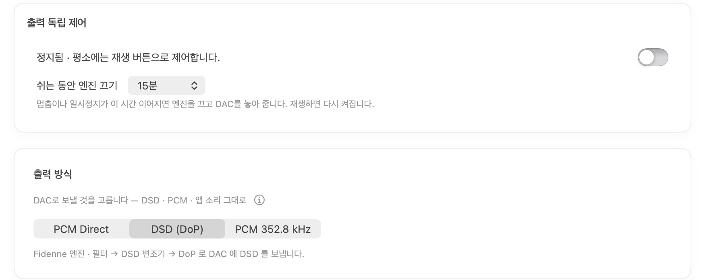
- PCM Direct
- Fidenne이 소리에 손대지 않고 macOS가 DAC로 보냅니다. 소리 다듬기는 꺼지고, 어떤 장치에서도 됩니다.
- DSD (DoP)
- 처음 골라져 있습니다. 엔진이 필터와 DSD 변환을 거쳐 보냅니다. DSD를 받는 DAC여야 합니다.
- PCM 352.8 kHz
- 엔진이 처리한 소리를 정수 PCM으로 보냅니다. DSD를 모르는 DAC에 맞습니다.
DSD로 시작했는데 쉬익 · 치직 하는 큰 잡음이 나면 곧바로 멈추고 PCM 352.8 kHz 로 바꿉니다. 목록에서 이름 끝에 “· PCM Direct 만” 이 붙은 장치는 소리 다듬기를 쓸 수 없습니다.
사용 2
음량부터 낮추기
앱을 켠 뒤 처음 재생하면 음량 안내 창이 뜹니다. 음량을 낮추고 낮췄어요, 시작 을 누른 다음 천천히 올립니다.
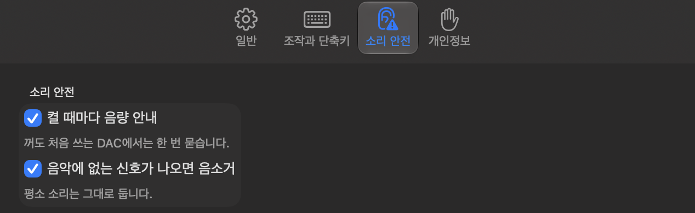
- 안내 창을 끄려면 설정 › 소리 안전 에서 “켤 때마다 음량 안내” 를 끕니다.
- 꺼 두어도 이 앱으로 처음 쓰는 DAC에서는 한 번 묻습니다.
PCM Direct로 바꿀 때는 엔진의 안전한 여유 음량이 적용되지 않으므로, 바꾸기 전에 DAC 음량을 확인합니다.
사용 3
서비스 연결
음악 페이지 검색 칸 앞의 서비스 단추로 Apple Music · Spotify · YouTube Music 중 하나를 고릅니다.
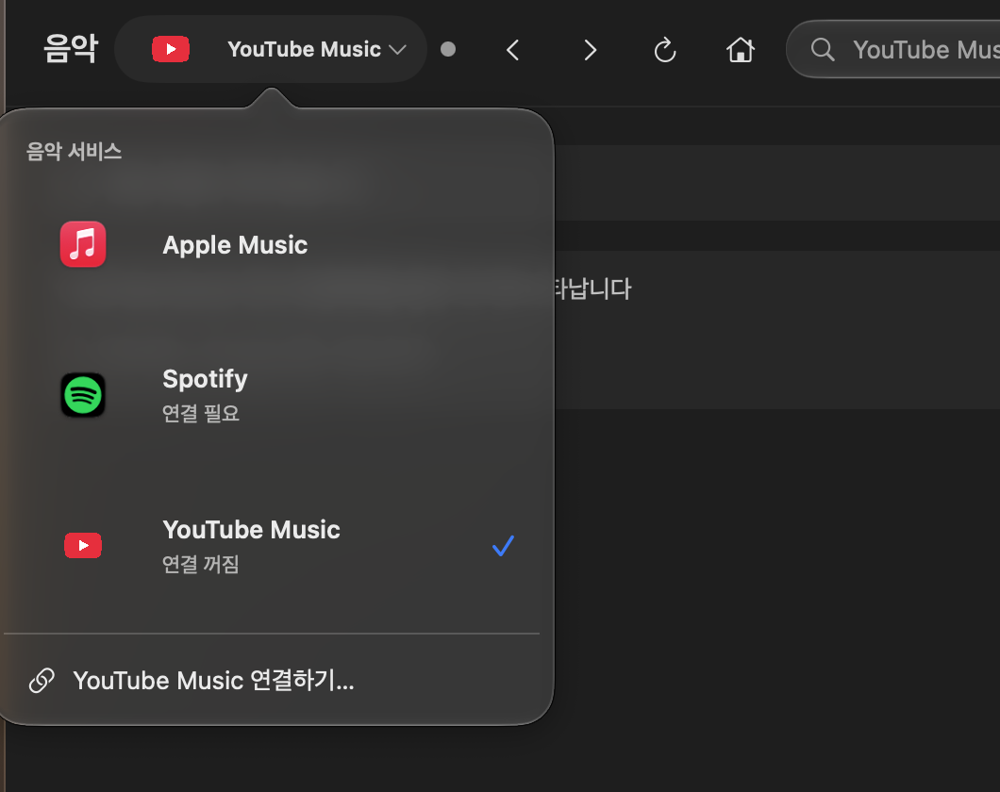
- Apple Music — macOS가 허용을 물을 때 허용 만 하면 됩니다.
- Spotify — Spotify 앱에서 곡을 고르면 Fidenne이 소리를 다듬습니다.
- YouTube Music — 설치 12 를 따라 합니다. Chrome 과 Edge 에서만 됩니다.
- 하단 막대의 엔진 스위치를 켭니다. 자동 감지 로 두면 스위치가 곡을 틀지 않으므로, 음악 앱에서 곡을 직접 틉니다.
Apple Music 을 Fidenne 에서 조작한다면 — Music 앱에서 꺼 둘 것
- 자동 재생(∞) — 다음 재생 목록 위 ∞ 단추. 켜 두면 Music 이 다른 곡을 끼워 넣습니다.
- 셔플 · 반복 — Music 쪽은 끄고, Fidenne 막대의 셔플 · 반복을 씁니다.
- 곡 전환(AutoMix · 크로스페이드) — Music › 설정 › 재생. 곡이 겹치면 곡 넘김 · 레이트 맞추기가 어긋날 수 있습니다.
- 소리를 먼저 바꾸는 사운드 체크 · 이퀄라이저 · 사운드 향상기도 끄는 것을 권합니다.
곡은 늘 각 서비스의 앱에서 내 계정으로 재생됩니다. 소리가 Fidenne을 거치는데도 안 들리면 입출력 페이지의 입력과 출력을 확인합니다.
사용 4
하단 재생 캡슐
창 아래에 늘 떠 있는 막대입니다. 지금 소리와 재생을 여기서 다 다룹니다. 놓인 차례대로:
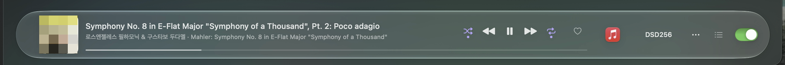
- 서비스 — 지금 소리를 내는 앱(Apple Music · Spotify · YouTube Music)입니다. 누르면 그 앱이 앞으로 옵니다(YouTube Music 은 그 브라우저).
- 출력 방식(예: LR · 7차 · DSD128) — 누르면 PCM Direct · 추천 사운드 프리셋 · 저장한 프리셋 · 사운드 설정…을 고릅니다.
- 앨범 표지 — 누르면 큰 재생 화면(앨범 모드)이 열립니다. Esc, 닫기(×), 표지를 다시 누르면 닫힙니다.
- 곡과 재생 위치 — 재생 위치 줄에 마우스를 올리고 누르면 그 자리로 옮깁니다.
- 하트 — Fidenne 이 관리하는 Fidenne 전용 좋아요한 곡(보관함)에 담습니다. 서비스 앱의 좋아요와는 따로입니다.
- 셔플 · 이전 · 재생/일시정지 · 다음 · 반복
- ⋯ — 지금 곡의 메뉴입니다: 다음에 재생 · 대기열 끝에 추가(Fidenne 목록을 재생 중일 때) · 재생목록에 추가(Fidenne 보관함) · 가사 보기 · 곡 정보 · 다른 앱에서 열기, 그리고 출력 설정…(입출력 페이지의 출력 설정).
- 다음 재생(목록 단추) — 다음 재생 · 가사 패널을 열고 닫습니다.
- 엔진 스위치 — Fidenne 처리를 켜고 끕니다. 스위치 색이 상태입니다(초록 실행 중 · 주황 준비 중 · 빨강 오류). 엔진이 꺼진 채 오류가 있으면 옆에 빨간 ! 가 뜨고, 누르면 입출력 · 진단 페이지가 열립니다. 일시정지는 음악 앱만 멈추고 엔진은 켜 둡니다.
셔플과 반복은 Fidenne에서 재생한 목록에서만 씁니다. 다른 기기에서 Spotify를 틀면 막대에는 “다른 기기에서 재생 중”만 보이고 조작은 그 기기에서 합니다.
사용 5
음악 페이지
사이드바의 음악(⌘1)을 엽니다. 홈에는 이어 듣기 · 오늘 들은 것 · 내 재생목록 같은 줄이 보입니다.
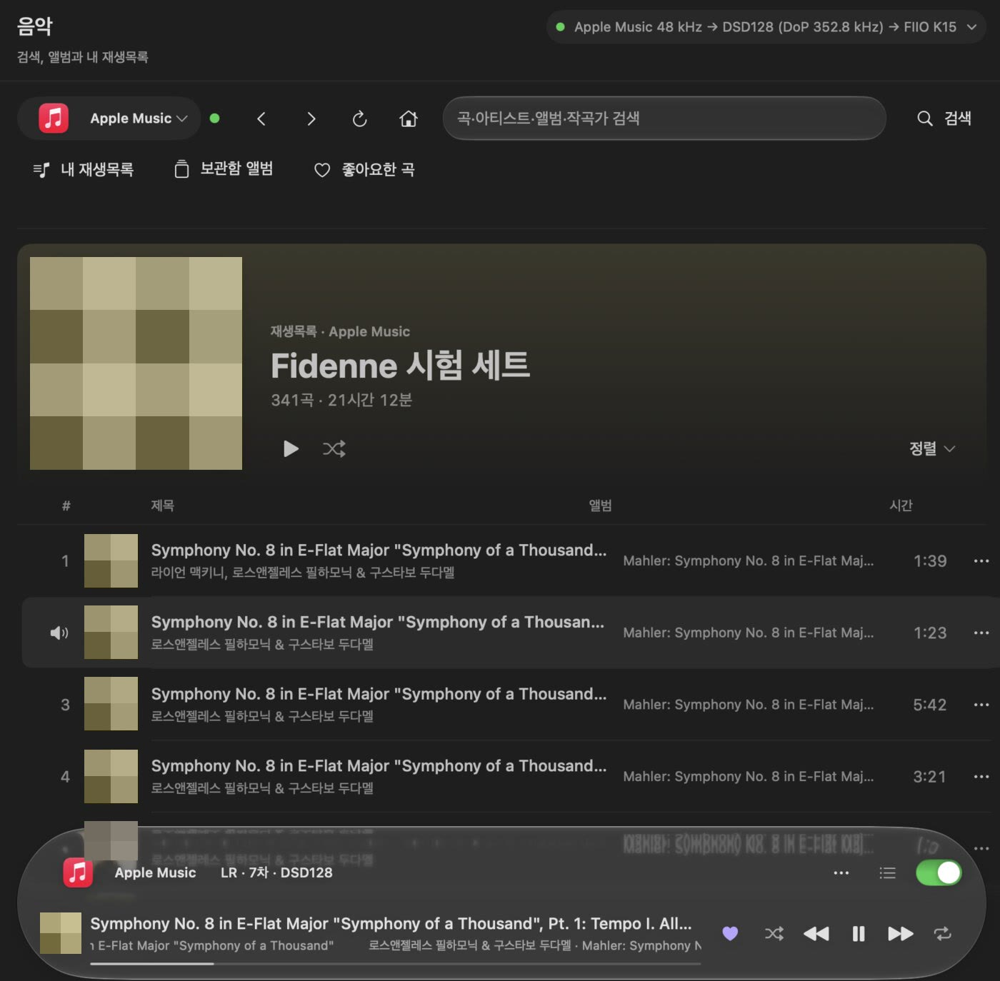
- 검색 칸 앞의 서비스 단추로 서비스를 고릅니다.
- 곡 · 아티스트 · 앨범을 검색합니다.
- 곡을 누르고 지금 재생이나 다음에 재생을 고릅니다.
Spotify 검색 결과는 다른 서비스와 섞이지 않고 결과 맨 위 Spotify 탭에서 따로 보입니다. Spotify 검색이 안 되면 설치 10 · 11, YouTube Music이 “연결 안 됨” 이면 설치 12 를 봅니다.
사용 6
Fidenne 보관함
재생목록은 Fidenne 안에 저장되고, 곡은 각 서비스에서 재생됩니다. 이 Mac의 음악 파일은 보관함 페이지에 모입니다.
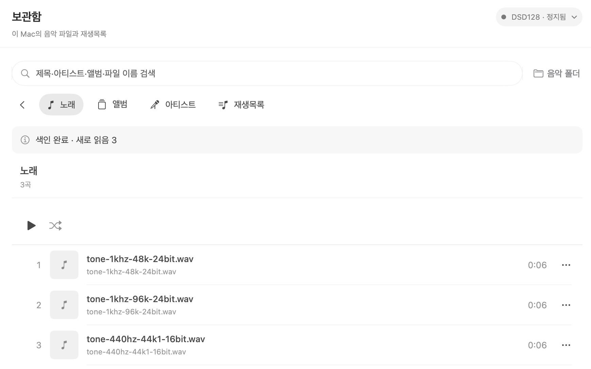
- 곡 줄 끝의 ⋯(또는 우클릭) › 재생목록에 추가 를 고릅니다. 하트는 좋아요 목록에 담습니다.
- ＋ 새 재생목록 으로 이름을 정해 새 목록을 만듭니다.
- 보관함 페이지의 음악 폴더 에서 폴더를 추가합니다. WAV · AIFF · FLAC · ALAC · AAC · MP3 · Opus 를 읽습니다.
파일 자체는 옮기거나 바꾸지 않고, 목록을 지워도 곡 파일은 그대로 남습니다. 서비스에서 곡이 사라지면 목록의 그 줄은 재생되지 않을 수 있습니다.
사용 7
다음 재생과 가사
앨범 모드를 열면 가운데 칸에 다음 재생 과 가사 가 있습니다.
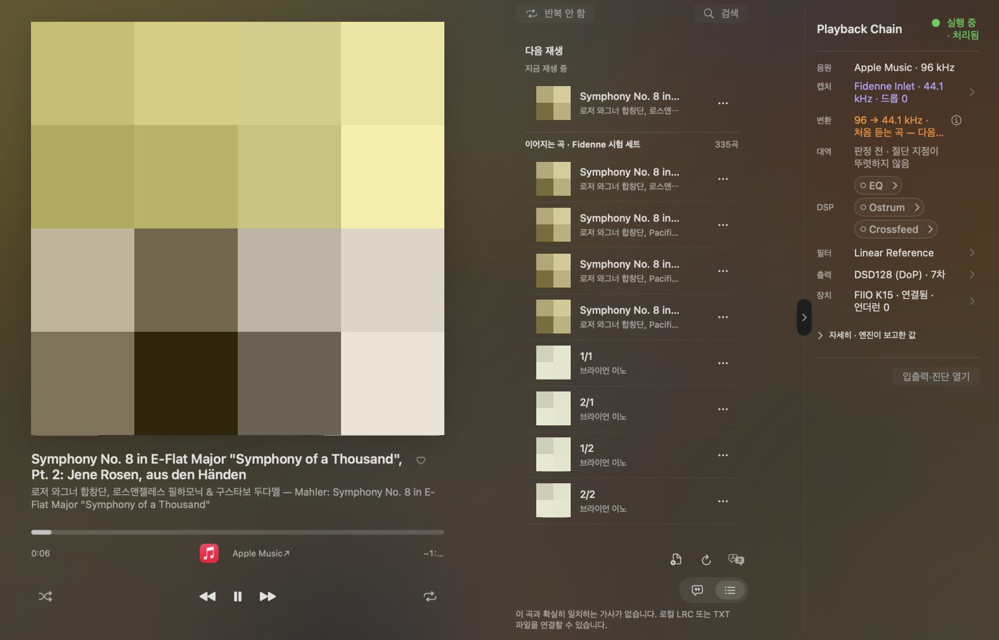
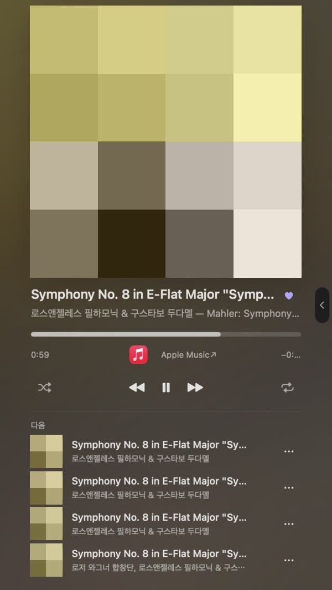
- 아래 단추로 다음 재생과 가사를 오갑니다. 가사는 지금 부르는 줄이 또렷하고 멀어질수록 옅어집니다.
- 가사 파일(LRC 또는 TXT)을 곡에 직접 연결하거나, 가사가 빠르거나 늦으면 타이밍을 조금씩 고칩니다.
- 가사가 안 나오면 새로고침(↻)을 누릅니다. 못 찾은 곡은 30분 동안 다시 묻지 않습니다.
가사를 처음 인터넷에서 찾을 때 동의를 한 번 묻습니다. 보내는 것은 곡 제목 · 아티스트 · 앨범 · 길이뿐이고, 동의하지 않으면 보내지 않습니다.
사용 8
소리 다듬기
사이드바의 DSP(⌘4)를 엽니다. 그래프 밑에 Equalizer · Ostrum · Crossfeed 세 탭이 있습니다.
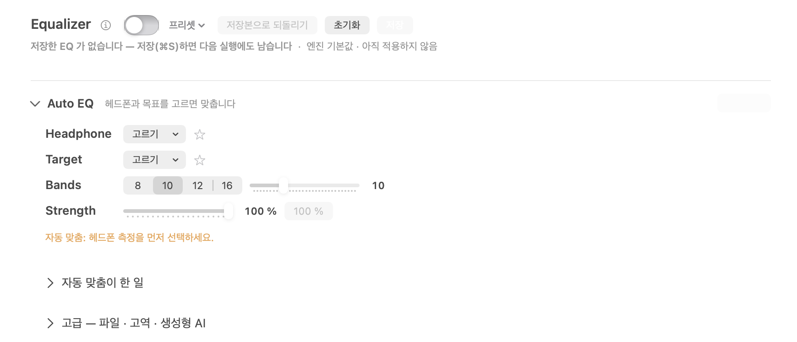
- Equalizer — 높은 소리와 낮은 소리의 크기를 구간별로 조절합니다. Auto EQ 에서 헤드폰과 목표를 고르면 맞춰 줍니다.
- Ostrum — 저음 · 존재감 · 소리의 폭을 다듬습니다. 시작값 넷 중 하나에서 출발합니다.
- Crossfeed — 헤드폰의 좌우 소리를 조금 섞습니다. 스위치로 켜고 끕니다.
- 바꾸면 저장하지 않아도 그대로 적용됩니다. 귀에 들리기까지는 필터와 출력 버퍼를 지나는 시간만큼 늦고, 긴 필터나 ‘안정’ 버퍼에서는 몇 초까지 걸릴 수 있습니다. 다음 실행에도 남기려면 저장(⌘S)을 누릅니다.
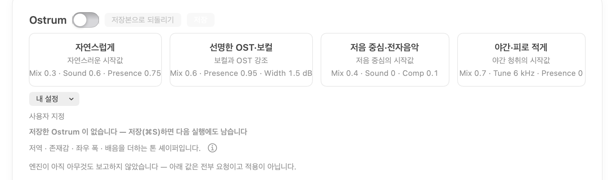
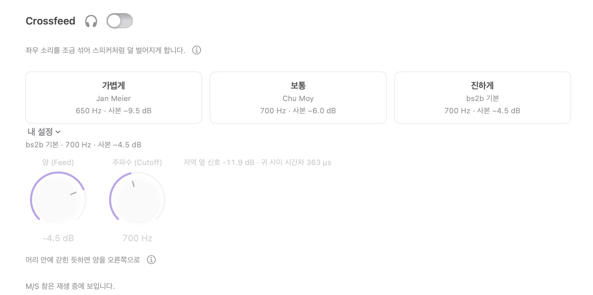
DSP는 엔진을 거칠 때만 작동합니다. PCM Direct이거나 352.8 kHz 를 받지 않는 장치에서는 소리가 안 바뀌니 사용 1 을 봅니다. 소리가 너무 커지면 EQ 를 먼저 줄여 봅니다.
사용 9
막혔을 때
소리가 안 나면 먼저 세 가지를 봅니다.
- 하단 막대의 엔진 상태가 실행 중 인지 봅니다.
- DAC와 앰프의 음량이 올라 있는지 봅니다.
- 음량 안내 창이 떠 있지 않은지 봅니다.
- 그래도 안 되면 메뉴 도움말 › 문제 제보용 진단 만들기… 를 엽니다. 처음 실행할 때 «문제 제보용 진단 기록»에 동의했다면 이미 기록되고 있으니, 문제가 생긴 뒤 앱을 끄기 전에 바로 번들을 만듭니다. 꺼 두었다면 진단 기록 시작 을 눌러 두고, 다음에 문제가 생기면 그때 만듭니다. 번들은 보내기 전에 내용을 보여 줍니다.
- 메일로 보내기 가 메일 앱에 주소와 제목을 채워 엽니다. 번들은 직접 붙입니다.
문의는 fidenne.support@gmail.com. 앱 버전 · macOS 버전 · DAC와 출력 방식 · 언제 무엇을 하다가 무엇이 들렸는지를 함께 적습니다. 번들에는 그 시간대에 들은 곡의 제목과 아티스트가 들어 있습니다. 메일로만 보내고 GitHub 이슈에는 올리지 않습니다.
앱을 지울 때는 먼저 입출력 · 진단 › 입력과 출력 장치 에서 Fidenne Inlet 의 제거… 를 누른 뒤 앱을 휴지통으로 옮깁니다. 앱만 버리면 Inlet 장치가 남습니다. 라이트 테마는 아직 정식 지원이 아닙니다.